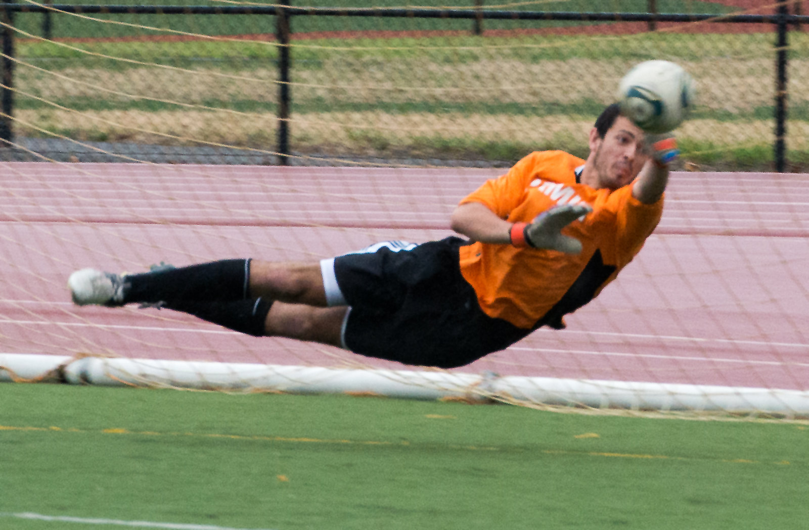

Diving: It is used when the ball is out of reach for the goalie so the goalie jumps towards the ball fully stretched to save it.
Michael Crosio - Flickr - CC-BY-NC
Punting: This skill is used for the goalie to send the ball up the field. The goalie throws the ball up and kicks it away as far as they can.
Saving: This skilled is used when the goalie puts them self in front of the net to make sure the ball doesn’t go in the goal.